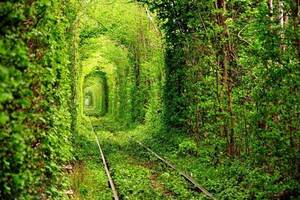
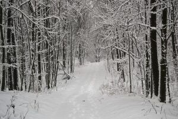

Ласкаво просимо до мого міні-блогу. Тут ви дізнаєтесь детальнішу інформацію про мене
Для початку розкажу вам що таке "Блог". Блог (англ. blog, від web log — «мережевий журнал чи щоденник подій») — це вебсайт, головний зміст якого — регулярно додавані записи, зображення чи мультимедіа. Для блогів характерні короткі записи тимчасової значущості.
Надзвичайна популярність блогів зумовлена двома головними обставинами: по-перше, публікувати інформацію в Інтернеті за допомогою блогів досить легко — фактично, створення нового посту зводиться до набирання його тексту у відповідному полі та відправки його на сервер шляхом натисканням кнопки «Публікувати» (англ. Publish) або подібної. Після цього пост зберігається на сервері, який автоматично формує веб-сторінки, різні посилання, додає стиль форматування тощо (такі серверні програми називаються системами управління змістом — англ. Content Management Systems або CMS). Тому користуватися блогом не важче, ніж простим текстовим редактором. Друга причина — це моментальна доступність в Інтернеті опублікованої інформації; існують декілька безкоштовних блогових платформ (наприклад Wordpress або Livejournal), де будь-хто може зареєструватися та вести свій блог. Блоги періодично скануються Інтернет-пошуковиками, такими як Google, Yahoo!, та ін.
Саме з цих характеристик — мобільності та доступності блогів — випливає їх визначна роль у творенні інформаційного суспільства, реалізації свободи слова, боротьбі за права людини у світі, та й просто у комунікації та обговоренні будь-яких ідей поміж людьми. Визнанням великої соціальної ролі блогосфери у боротьбі за права та свободи людей стала нещодавня публікація так званого «Довідника блогерів та кібер-дисидентів» (Handbook for Bloggers and Cyber-dissidents) асоціацією «Репортери без кордонів» (Reporters without Borders), який є вільним для використання та поширення і служить прекрасним вступом як до основ ведення блогу і різних його аспектів, так і до застосування блогів як зброї для боротьби з тоталітарними урядами та цензурою. Одним з багатьох прикладів соціальної ролі блогів можна вказати відомий Interdictor's блог на LiveJournal, який був присвячений урагану «Катріна» і вівся хлопцем, який залишився у Новому Орлеані і кожні кілька годин сповіщав про розгортання трагічних подій, що у той час сприяло підбуренню суспільної думки проти занадто повільної реакції Білого Дому.
Більшість блогів приватного характеру становлять інтерес лише для невеликої групи людей, які можуть бути знайомі з автором або цікавляться його думками та коментарями щодо подій у світі, фахової діяльності, родинного життя, мистецтва тощо. Тільки деякі з них стають відомими блогерами, нові пости яких можуть отримувати десятки або сотні коментарів.
Щоб подивитись як я веду свій інстаграм - перейдіть за посиланням нижче.
перейти до instagram
Перегляньте які відео я знімаю - перейдіть за посиланням нижче.
перейти до youtube
5 моїх улюблених фото,які я знайшов в інтернеті.


Топ 10 пісень за моєю версією.